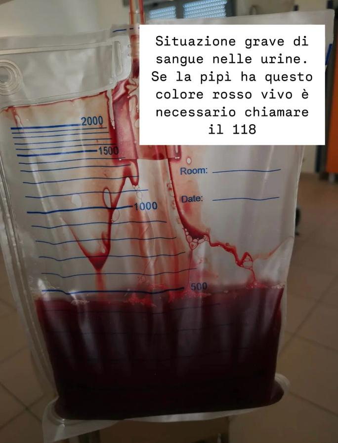
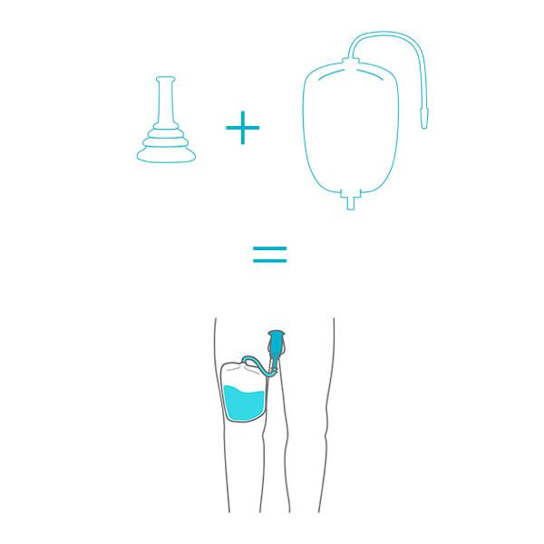
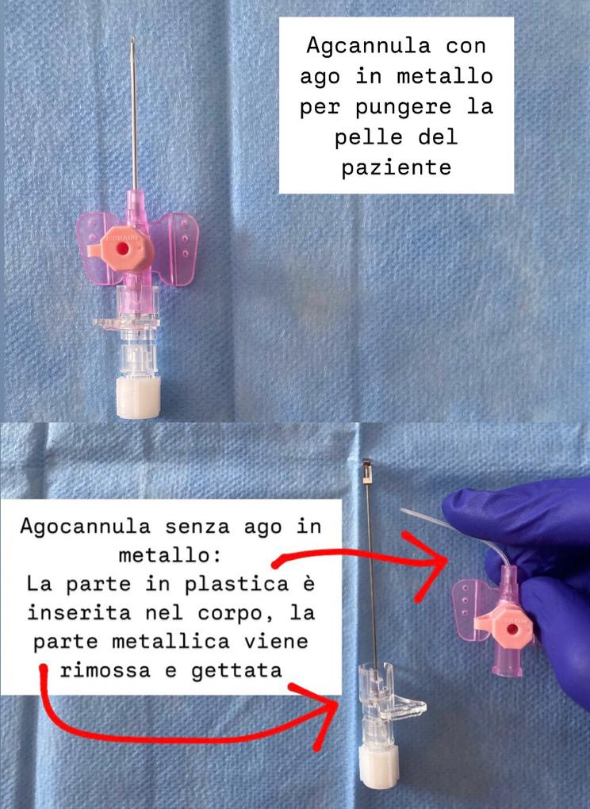
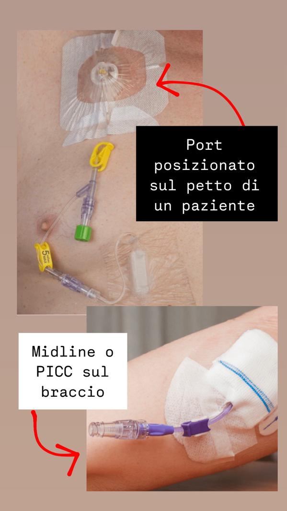
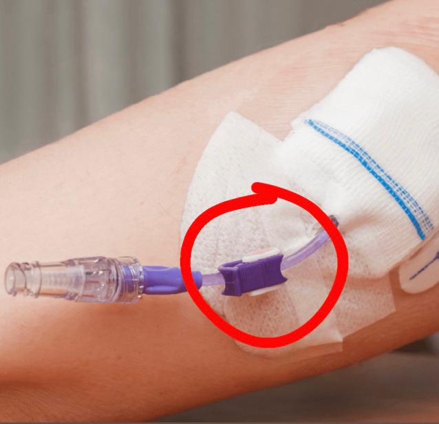
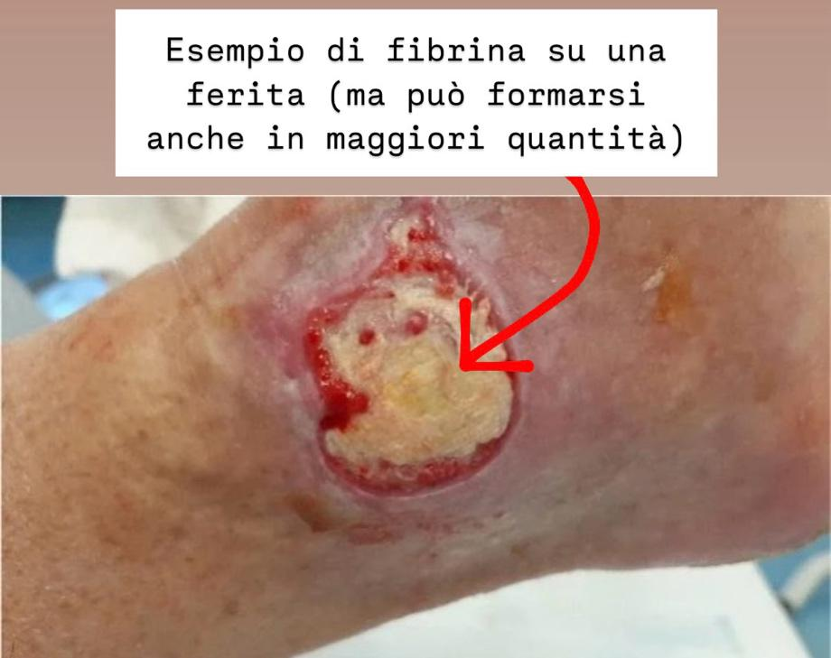

Il catetere vescicale è uno strumento che viene introdotto nella vescica attraverso l’uretra con il fine di permettere la fuoriuscita dell’urina. È utile quando il paziente non riesce ad urinare autonomamente (a causa di particolari patologie o condizioni), monitorare la diuresi, ridurre il contatto dell’urina con la pelle per facilitare la guarigione di ferite nella zona dell’inguine o del sacro, in caso di incontinenza o per chi non riesce a recarsi in bagno.
Per quanto riguarda il materiale, i cateteri possono essere in lattice (color giallo marrone) o in silicone (trasparenti). A domicilio preferiamo i cateteri in silicone.
Per quanto riguarda la grandezza, i cateteri solitamente utilizzati a domicilio vanno dal 14 Ch ai 22 Ch (Ch = Charrière, che è l’unità di misura). Il Ch più basso indica una misura di catetere minore. La misura viene decisa in base alla caratteristica delle urine e in base alle caratteristiche dell’apparato urinario del paziente. Per riconoscere quale grandezza stiamo inserendo, alla base del catetere viene indicato il numero associato ad un colore.
Il catetere vescicale viene inserito dall’infermiere attraverso l’uretra e viene cambiato generalmente ogni 28 / 30 giorni. Non ha alcuna ripercussione se il cambio viene eseguito poco prima o poco dopo lo scadere dei 30 giorni.
Per i pazienti che non provengono da una struttura ospedaliera è necessaria la richiesta medica (ricetta rossa)
che deve riportare la seguente dicitura
“si richiedono n°2 cateteri
vescicali Ch TOT (indicare la dimensione del catetere) e n°30 sacche raccogli urine”
Per i pazienti dimessi dall’ospedale è necessaria la lettera di dimissione dove viene
specificato che il paziente è portatore di catetere vescicale, tipo di catetere, il motivo
dell’inserimento e la data di posizionamento e la ricetta rossa del medico con dicitura
“si richiedono n°2 cateteri vescicali Ch TOT (indicare la dimensione del catetere) e n°30 sacche raccogli urine”
Per i pazienti con particolari problematiche legate al cambio catetere è necessaria la
certificazione dello specialista (urologo). Il dottore del servizio domiciliare valuterà che il
cambio possa essere svolto in sicurezza a domicilio.
Con la documentazione necessaria, quindi, recarsi presso
l’ufficio Assistenza Protesica in
via Giacomo Leopardi 71
dove vi verrà rilasciata l’autorizzazione del medico funzionario (dal
lunedì al venerdì dalle 8.00 alle 12.00, il martedì e giovedì dalle 14.00 alle 16.00).
Infine, mensilmente, presso la
Struttura Complessa Farmaceutica Integrativa, Casa della salute in via Sardegna 45 ,
è necessario ritirare i 2 cateteri e le 30 sacche raccogli urina che vi
spettano (lunedì dalle 9.00 alle 13.00 oppure il martedì, giovedì e venerdì dalle 8.30 alle
13.00).
La pratica ha validità annuale. Allo scadere dell’anno è necessaria una nuova richiesta ed
autorizzazione.
Ritirando il materiale, quindi, a casa dovrete essere provvisti di cateteri e sacche, il resto del
materiale per il cambio viene portato dall’infermiere ad ogni incontro.
La sacca delle urine deve essere cambiata a casa del paziente o da chi se ne prende cura. Se
la sacca non presenta un “rubinetto” sul fondo, allora è necessario che venga cambiata
quotidianamente o quando è piena;
Se la sacca presenta un “rubinetto” di scarico, allora può
essere cambiata ogni 2 giorni e deve essere svuotata quando è piena. Di seguito troverà un
video che le sarà utile per il cambio e lo svuotamento della sacca di raccolta.
Per prima cosa controlli che il tubo del catetere o della sacca non abbia formato un angolo e limiti la fuoriuscita dell’urina. In secondo luogo, è necessario che il paziente beva a sufficienza per produrre una quantità adeguata di urina. Se il tubo è ben disteso e il paziente beve, probabilmente il catetere è “tappato” da materiale non liquido (potrebbe essere un coagulo di sangue o materiale purulento prodotto da una infezione o disidratazione).
Se si interviene tempestivamente, in molti casi, si risolve il problema con il “lavaggio”. Con una siringa da 60 ml (chiamata “schizzettone”) caricata di soluzione fisiologica, si stacca la sacca dal catetere vescicale e si connette con la siringa e si spinge la soluzione fisiologica in modo da sbloccare il catetere e far fuoriuscire l’urina. Attenzione: è una procedura innocua ma non deve essere abusata perché favorisce sicuramente la comparsa di infezioni (a differenza di quanto si crede, il catetere deve essere toccato e cambiato il minimo necessario). Se il lavaggio non risolve la situazione, il catetere deve essere sostituito dall’infermiere. Per maggiore chiarezza sul lavaggio, cercare la domanda
“cos’è il lavaggio del catetere”.
Può accorgersi che il catetere non funziona correttamente quando è insufficiente la quantità di urina nella sacca o se l’urina fuoriesce dal catetere e viene invece ritrovata nella biancheria intima, nel pannolone o nella traversa del letto.
Il catetere bloccato non costituisce subito una situazione di emergenza, non si agiti. Il problema si presenta quando, invece, il blocco viene riconosciuto troppo tardi (ore dopo il blocco) e si forma il “globo vescicale”: la vescica si ingrossa perché l’urina non fuoriesce e si forma un rigonfiamento nel basso ventre molto doloroso al tatto.
La presenza di coaguli di sangue o urina leggermente tinta di rosso non costituisce una situazione di emergenza, non si preoccupi. La presenza di sangue in questa quantità può essere dovuta da disidratazione (quindi è necessario bere acqua in maggiore quantità) o da piccole lesioni causate dallo sfregamento del catetere lungo le pareti dell’uretra nei movimenti o dopo il cambio catetere, oppure da una leggera infezione. Queste situazioni sono favorite in pazienti che assumono farmaci anticoagulanti.
La situazione è pericolosa ed è necessario chiamare il 118 se l’urina è colorata di rosso vivo e se continua nel tempo (indice di emorragia), come nella foto sottostante.

Il colore troppo scuro rispetto alla normale colorazione delle urine (giallo paglierino) può essere dovuto ad uno stato di disidratazione (urine concentrate) e, quindi, bisogna idratare maggiormente il paziente, oppure da particolari patologie o dall’assunzione di farmaci. Se le urine, invece, non sono limpide ma presentano materiale purulento e cattivo odore, probabilmente è in atto una infezione urinaria (per saperne di più cercare la domanda “cosa succede se mi viene una infezione”.)
È difficile che il catetere si sia sfilato senza trazioni esterne. Spesso, invece, l’urina al di fuori del catetere è dovuta a materiale non liquido che si deposita nel tubo oppure ad infezioni urinarie. Come mai l’urina esce dal catetere in caso di infezioni? I batteri a contatto con l’uretra stimolano la contrazione dei muscoli e spingono la pipì anche fuori dal tubicino (per ulteriori informazioni sulle infezioni, cercare la domanda “cosa succede se mi viene una infezione”). Per questo stesso motivo si chiede al paziente di non provare a “spingere” per fare pipì mentre ha il catetere.
Certo. Il catetere è fissato da un “palloncino” all’interno della vescica. Se non viene tirato o se il palloncino non si rompe, il catetere non può sfilarsi. Si procuri in farmacia un reggi sacca da appendere dove le viene più comodo o una sacca più piccola da legare sulla gamba per agevolare gli spostamenti.
Se l’infezione è riconosciuta tempestivamente ed è localizzata soltanto a livello urinario, non è una situazione di emergenza ed è risolvibile. L’infezione si riconosce principalmente dal colore torbido delle urine, dal cattivo odore, dal fatto che il catetere si “tappa” più facilmente, quando il catetere prende una colorazione violacea e, in alcuni casi, quando l’urina fuoriesce dal catetere e viene ritrovata nella biancheria intima, pannolone o traversa del letto (sul perché succede, cercare la domanda
“ho trovato della pipì fuori dal catetere”). In caso di infezione, il paziente potrebbe lamentare bruciore o fastidio all’uretra e sensazione di dover urinare frequentemente.
L’infezione è risolvibile contattando il medico e facendosi prescrivere un antibiotico adatto. Per essere più precisi si può fare una urinocoltura e individuare il ceppo batterico responsabile (per maggiori informazioni, cercare la sezione
“Prelievo delle urine”).
Se l’urina fuoriesce dal corpo anche senza catetere non c’è nessun pericolo imminente. Il catetere può essere riposizionato con calma e senza fretta.
Se senza catetere non urina più, allora, il riposizionamento è più urgente per evitare la formazione del “globo vescicale”: la vescica si ingrossa perché l’urina non fuoriesce e si forma un rigonfiamento nel basso ventre molto doloroso al tatto.
DEVE lavarsi. Una corretta igiene intima riduce il rischio di sviluppare infezioni. Si lavi con sapone neutro e asciughi bene la zona intima. Mi raccomando di lavarsi dall’uretra verso l’ano e non viceversa.
Il lavaggio consiste nell’induzione di soluzione fisiologica all’interno del catetere in modo da “pulire” e “sbloccare” il tubicino. Si esegue staccando la sacca raccogli urina dal catetere e connettendolo, invece, ad una siringa da 60 ml (chiamata “schizzettone”) riempita di soluzione fisiologica. Ad oggi le indicazioni su questa pratica non sono molto concordi ed è sempre meglio toccare il meno possibile il catetere per limitare l’insorgenza di infezioni. Quindi, non abusi della pratica del lavaggio, prevenga la formazione di materiale che potrebbe tappare il catetere bevendo molto.
La quantità normale di urina prodotta ogni giorno varia a seconda della quantità di liquidi introdotti (quanto beve, quanto suda), dall’età, dall’assunzione di farmaci (per esempio, i diuretici aumentano la quantità di liquidi eliminati) e dallo stato generale di salute. Approssimativamente, la quantità di urina prodotta ogni giorno da una persona adulta in buona salute varia tra gli 800 e i 2000ml al giorno.
Se la quantità di urina giornaliera è inferiore ai 400ml (oliguria) potrebbe essere segno di problemi renali o disidratazione;
Se la quantità di urina giornaliera è superiore ai 3000ml (poliuria) potrebbe essere segno di patologie come diabete.
In altri casi, molti anziani presentano una condizione per la quale urinano poco al giorno e molto di notte (nocturia), quindi monitori la quantità di urine nella totalità delle 24 ore e non solo durante le ore diurne, prima di arrivare ad una conclusione.
Nel caso in cui il paziente riesca ad urinare autonomamente (quindi non presenta un blocco di tipo meccanico o neurologico) allora può urinare tramite padelle o pappagalli. Per l’uomo esiste un presidio simile al catetere ma meno invasivo (non deve essere inserito in uretra) chiamato urocondom (nella immagine sottostante).

Se le condizioni del paziente lo permettono, chiedere al medico di fornirvi una ricetta rossa
sul quale viene riportato “rimozione del catetere vescicale ed eventuale riposizionamento”.
A questo punto, l’infermiere toglierà il catetere a domicilio.
È fondamentale che in questa fase il paziente assuma molti liquidi per stimolare la produzione
e l’eliminazione dell’urina. Se nelle successive 6 ore dalla rimozione del catetere il paziente
non urina, allora un infermiere tornerà a casa e riposizionerà il presidio.
Per terapia reidratante si intende la somministrazione principalmente di Soluzione fisiologica, Soluzione glucosata e soluzione elettrolitica per via endovenosa (se il tubicino è inserito in una vena) oppure ipodermica (se il tubicino non è inserito in una vena ma molto spesso nella pancia / nel braccio / nella coscia). La terapia reidratante è spesso prescritta per migliorare lo stato di idratazione del paziente, aumentare la diuresi, fornire acqua, zuccheri, sali all’organismo e bilanciare, trattare e prevenire stati di squilibri idroelettrolitici.
I liquidi vengono somministrati tramite flebo e, quindi, connettendo la bottiglietta di liquido al corpo del paziente. La soluzione preferita a domicilio è tramite agocannula periferica (si cerca la vena nel braccio o nella gamba e si buca con un ago. Una volta trovata le vena viene tolto l’ago e resta nel braccio un tubicino di plastica. Quindi, NON RESTA UN AGO DI METALLO NEL CORPO ed è totalmente sicuro muoversi e tenere l’agocannula nel braccio) ma, nel caso non fosse possibile reperire una vena, con il consenso del medico, è possibile somministrare il liquido inserendo una agocannula sotto la pelle della pancia o del braccio o della coscia (questa pratica è meno indicata perché il liquido infuso – che deve essere solo soluzione fisiologica - viene assorbito dal corpo molto più lentamente e il paziente non deve avere particolari patologie che ne rallentano o impediscono l’assorbimento – ad esempio scompenso cardiaco grave o patologie renali). Infine, se la terapia prescritta è destinata a durare nel tempo, sarebbe molto più indicato somministrare i liquidi con altri tipi di accesso venoso (per approfondire cercare la sezione “medicazione Midline, PICC o Port”).

Per iniziare la terapia reidratante a casa è necessaria la richiesta del medico curante (ricetta rossa) o il foglio di dimissione ospedaliera dove venga indicato il tipo di soluzione da somministrare, la quantità di liquido, il metodo di somministrazione e per quanto tempo è necessario intervenire.
Prima del nostro primo incontro è necessario procurarsi la soluzione prescritta in farmacia (gratuitamente con ricetta medica) e predisporre un’asta, un attaccapanni, un chiodo di un quadro o una scala per appendere la flebo (l’asta da flebo è la migliore alternativa perché permette al paziente di muoversi più facilmente mentre riceve la terapia).
La durata dipende dalla quantità di liquido da somministrare (di solito 500 ml o 1000 ml), se il metodo di somministrazione avviene tramite via endovenosa o ipodermica (per via endovenosa, solitamente, è molto più veloce) e dalle caratteristiche del paziente (se la vena reperita è molto piccola, la flebo andrà più lentamente; Se il paziente soffre di patologie come uno scompenso cardiaco importante o malattie renali, la flebo dovrà essere somministrata più lentamente per evitare di sovraccaricare il corpo di liquidi). In generale, una flebo per via endovenosa può durare dalle 2 alle 5 ore, per via ipodermica, invece, molte ore.
La durata della terapia viene decisa dal medico in base allo stato di salute del paziente e allo scopo che si vuole raggiungere.
No, una volta trovata la vena giusta viene sfilata la parte metallica dell’accesso venoso e resta nel braccio solo un tubicino di plastica molto flessibile.
Nessun pericolo! Il massimo che può accadere, se l’ago cannula è posizionata in una vena, è che esca del sangue dal punto in cui era posizionato l’accesso (in questo caso basterà tenere premuto il punto di fuoriuscita del sangue per qualche minuto con una garza o cotone)
Potrebbe essersi “rotta” la vena in cui era posizionato l’accesso venoso (in questo caso chiudere immediatamente la flebo con la rotellina sul deflussore e rimuovere l’agocannula. Per maggiori informazioni su come rimuovere l’agocannula cercare la domanda “come tolgo l’ago quando finisco la terapia”) oppure, se l’accesso è ipodermico, potrebbe essersi depositato troppo liquido nel punto di infusione (in questo caso basta chiudere la flebo ed aspettare che il liquido venga riassorbito dal corpo per poi riaprila oppure basta rallentare le gocce della flebo con la rotellina sul deflussore).
È preferibile restare fermi durate la flebo per evitare che si blocchi ma è possibile muoversi. Il metodo migliore è quello di procurarsi un’asta per le flebo provvista di ruote.
Quando la flebo giornaliera è terminata è necessario che il caregiver stacchi il tubo del deflussore dall’agocannula (non tolga anche l’ago perché verrà riutilizzato il giorno seguente per riposizionare la successiva flebo). Di seguito trova un video per aiutarla a staccare il deflussore dall’agocannula.
Quando termina la flebo non c’è pericolo che entri aria nella vena.
Se è prevista la somministrazione di una ulteriore flebo a seguito di quella posizionata dall’infermiere, è necessario che il caregiver connetta la seconda flebo con l’agocannula. Di seguito trova un video su come fare questo passaggio.
Di seguito trova un video dove vengono mostrate tutte le manovre che si possono eseguire per “sbloccare” una flebo.
Quando il paziente ha uno scarso patrimonio venoso, in accordo con il medico, si può posizionare la flebo ipodermica nella pancia / braccio / coscia oppure si può valutare, sempre sotto prescrizione medica, il posizionamento di un accesso venoso più “stabile” (Midline o PICC), che viene collocato in ospedale e resta in sede senza essere cambiato molto più a lungo di una semplice agocannula. Il posizionamento di Midline o PICC viene preso in considerazione anche quando la terapia viene protratta a lungo nel tempo o quando il paziente non tollera la flebo e si “strappa” spesso l’agocannula.
La rimozione dell’agocannula è totalmente sicura (si ricorda che non resta un ago di metallo nel braccio ma solo un tubicino di plastica molto flessibile). La parte più dolorosa della rimozione dell’agocannula è togliere il cerotto che la tiene ferma.
Qualche bollicina d’aria non ha alcun effetto se entra all’interno della vena, il corpo riesce a disfarla senza problema. L’importante, per non avere effetti avversi, è che, prima di collegare il deflussore all’accesso venoso, sia stato fatto uscire il liquido dal tubicino. In sintesi, il tubo del deflussore non deve essere vuoto completamente.
Per eliminare le bollicine d’aria, che potrebbero invece rallentare l’infusione del liquido, basta staccare il deflussore dall’accesso venoso, aprire il “rubinetto” della flebo e attendere che escano le bollicine che aveva individuato. Infine, ricollegare il deflussore all’accesso venoso (trova un video dove può vedere anche questo passaggio alla domanda “il liquido non scende / scende troppo lentamente, cosa faccio?”)
La terapia farmacologia endovenosa prevede la somministrazione di un farmaco prescritto dal medico tramite agocannula (in merito cerchi la sezione “terapia reidratante con soluzione fisiologica, glucosata o elettrolitica” dove viene spiegato l’utilizzo dell’agocannula) (o Midline, o PICC, o Port). Durante la somministrazione del farmaco sarà presente l’infermiere per tutto il tempo necessario a terminare la terapia, a differenza della somministrazione di soluzione fisiologica o glucosata che, invece, non prevede la presenza continua dell’infermiere a domicilio.
A domicilio non si possono somministrare tutti i farmaci, anche per una questione di sicurezza. Le verrà comunicato se non sarà possibile somministrare il farmaco che deve assumere tramite il nostro servizio.
Si procuri la richiesta medica per la somministrazione del farmaco (mi raccomando, nella richiesta dovrà essere specificato il tipo di farmaco, il dosaggio previsto e la durata del trattamento). Inoltre, sarà necessario procurarsi in farmacia il farmaco prescritto dal medico.
L’iniezione intramuscolo o sottocutanea sono due dei metodi più veloci per la somministrazione dei farmaci qualora non fosse possibile somministrare la terapia per via orale. Vengono entrambe eseguite tramite puntura ma l’intramuscolo, come suggerisce il nome, prevede la somministrazione del farmaco nel muscolo, mentre le sottocute la prevede nello strato adiposo sotto la pelle.
Nello specifico, per le iniezioni intramuscolo, si preferiscono le zone del deltoide (nel braccio) e dorsogluteale (sopra al gluteo, nel quadrante superiore esterno) ma esistono altre zone che vengono scelte in base alla quantità di liquido da somministrare e alle caratteristiche del paziente.
Per le iniezioni sottocutanee, invece, si preferisce la parte superiore del braccio e l’addome.
Ovviamente nessuno è costretto a farlo ma sarebbe opportuno che imparasse a eseguire la terapia sottocute perché spesso sono terapie che durano a lungo del tempo e sono molto facili da eseguire. Eseguire la puntura sottocute è sicuro, al massimo si potrebbero formare ematomi (soprattutto se il paziente assume farmaci anticoagulati) o piccole palline di farmaco sotto la pelle. Per gli ematomi può usare qualche crema per il riassorbimento del sangue (come Ematonil), per le palline di farmaco, invece, massaggi la zona con il cotone subito dopo aver somministrato il farmaco con la puntura. Di seguito trova un video che le spiega come eseguire una puntura sottocute.
Solitamente, le iniezioni sottocute sono enoxaparina, clexane, arixtra, binocrit. Per l’iniezione intramuscolo, invece, la maggior parte sono antibiotici. Non tutti i farmaci si possono somministrare a domicilio, per ragioni anche di sicurezza. Le verrà comunicato se non sarà possibile somministrare il farmaco che deve assumere tramite il nostro servizio.
La durata della terapia viene dettata dalla prescrizione medica.
Sicuramente dovrà farci trovare a domicilio il farmaco che le ha prescritto il medico, disinfettante e cotone. Per le punture intramuscolo, la siringa e l’ago vengono portate dall’infermiere ma fa sempre comodo averne qualcuna di scorta a casa. Per le punture sottocutanee, invece, vedrà che il farmaco le verrà consegnato in farmacia già in una piccola siringa pronta all’uso.
Il prelievo del sangue è una pratica che viene eseguita bucando una vena (con un ago butterfly) solitamente del braccio con lo scopo di raccogliere sangue nelle provette che verranno poi analizzate per ricavare valori utili a riconoscere lo stato di salute del paziente.
Dipende dal tipo di esami che deve fare. In generale si può dire che gli esami per cui è indicato il digiuno sono quelli che analizzano il funzionamento metabolico di una persona (Acidi biliari, amilasi, azotemia, calcitonina, creatinina, ferro, acido folico, vitamine, elettroliti, emocromo, peptide C, lipasi, omocisteina, colesterolo, trigliceridi, transaminasi, uricemia, ormone della crescita GH, funzionalità gastrica e soprattutto glicemia e insulina). Se ha dubbi, ci chieda conferma durante la chiamata per fissare l’appuntamento.
Assolutamente sì, in modiche quantità.
La possibilità di assumere farmaci dipende dal tipo di esami che deve fare. Per esempio, nel caso misurassimo la glicemia, cerchi di non assumere farmaci che possano alterarla (insulina, metformina). Ci informi nel caso soffrisse di diabete, così cercheremo di darle la priorità per farle assumere il prima possibile il farmaco.
Quando il medico prenota gli esami, quindi, chieda sempre quali farmaci può e non può assumere prima del prelievo.
Dopo il prelievo le verrà lasciato un foglio sul quale troverà la data prevista per il rilascio dei risultati, un sito internet da consultare per vedere le analisi e una serie di numeri da inserire sul sito per il Login, la Password e il Pin. In alternativa, in via Sardegna alla Casa della Salute o al laboratorio analisi dell’ospedale può richiedere la stampa delle analisi.
Le provette vengono consegnate al laboratorio analisi dell’ospedale Sant’Andrea a La Spezia.
Dipende dal tipo di analisi che ha fatto. Posso dirle che esami quali il tempo di protrombina (PT / INR) per verificare la coagulazione del sangue, l’emocromo e le prove crociate per le trasfusioni vengono analizzate il giorno stesso del prelievo.
Il prelievo delle urine è una pratica che viene eseguita raccogliendo le urine in una provetta che verrà poi analizzata per ricavare valori utili a riconoscere lo stato di salute del paziente.
Per l’esame è necessario che, la mattina stessa, il paziente raccolga l’urina in un barattolo apposito (fornito in farmacia). L’urina migliore per il prelievo è la prima del mattino durante il “mitto intermedio” (cioè scartando il primo getto d’urina e raccogliendo la successiva restante).
Nel caso di portatore di catetere vescicale, l’urina migliore deve essere prelevata togliendo la sacca raccogli urina e “tappando” il catetere in modo da non far fuoriuscire la pipì per un po' di tempo. Dopo aver atteso, posizionare al di sotto del catetere il barattolo per l’esame delle urine e togliere il tappo per permettere all’urina di defluire nel contenitore (questa ultima parte può essere eseguita anche dall’infermiere che verrà a domicilio per il prelievo). Dopo la raccolta, riposizionare la sacca raccogli urine.
In farmacia si procuri un barattolo per l’esame delle urine. Per l’esame delle urine nelle 24 ore potrebbe servirle un contenitore graduato che misura la quantità di urina raccolta in una giornata.
Se le condizioni del paziente impediscono la raccolta autonoma delle urine è possibile ricavarle inserendo per il tempo necessario alla sola raccolta un catetere vescicale apposito. In questo caso è necessario che il medico ci invii una richiesta per “cateterismo estemporaneo” e l’infermiere si presenterà a casa con tutto l’occorrente per il prelievo.
L’esame delle urine nelle 24 ore serve a ricavare dei risultati strettamente legati alla quantità totale delle urine in una giornata. È importante, quindi, raccogliere per bene l’urina, seguendo la seguente procedura:
Il Midline è un tipo di catetere venoso periferico solitamente posizionato tra la spalla e il gomito. È un accesso venoso più lungo dell’agocannula, resta in sede per molto più tempo e viene posizionato in ospedale;
Il PICC è un tipo di catetere venoso che viene introdotto dal braccio o dal collo ed è molto più lungo del Midline e dell’agocannula, resta in sede per molto tempo e, anche in questo caso, viene posizionato in ospedale.
Il Port è un accesso venoso centrale totalmente impiantabile sottocute in prossimità di una grossa vena, resta in sede in modo permanente e viene posizionato in sala operatoria. È costituito da un catetere che viene inserito nella vena e da una camera di iniezione che permette, tramite un apposito ago chiamato “ago di Huber”, di somministrare terapie o effettuare prelievi.
Il Midline, il PICC e il Port vengono posizionati quando la terapia prevede l’infusione di farmaci o nutrizioni parenterali particolari che non possono essere somministrati tramite agocannula, quando la durata della terapia è protratta nel tempo e quando il paziente ha uno scarso patrimonio venoso e, quindi, non è possibile reperire una vena per l’agocannula.

Midline e PICC devono essere medicati 1 volta a settimana dall’infermiere;
Per quanto riguarda il Port, se viene utilizzato, l’ago di Huber viene cambiato una volta a settimana, se non viene utilizzato, invece, viene medicato e fatto un lavaggio ogni 60 giorni.
Nell’immediato posizionare una garza o del cotone e stringere forte con una benda il sito di entrata del catetere venoso. Successivamente, se il caso lo richiede, dovrà essere riposizionato in ospedale (contattare il medico di famiglia per la richiesta di inserimento del presidio in ospedale).
L’infermiere proverà a fare un lavaggio con soluzione fisiologica o eparina. Se il problema non viene risolto è necessario sostituire i presidi in ospedale.
Il gonfiore localizzato al braccio, in questo caso, potrebbe essere un segnale negativo. Ci contatti immediatamente o contatti un medico. Nella maggior parte dei casi potrebbe essere una infezione (misuri anche la temperatura del corpo), una trombosi della vena o una infiammazione della vena. Se il gonfiore è osservabile anche nel resto degli arti, allora, probabilmente, significa che il corpo del paziente non riesce a distribuire correttamente i liquidi.
Può lavarsi avendo cura di non immergere o bagnare eccessivamente il presidio. Prima di farsi la doccia, per esempio, può avvolgere il braccio dove è presente il catetere venoso con la pellicola trasparente da cucina.
Quando la flebo giornaliera è terminata è necessario che il caregiver stacchi il tubo del deflussore dal tubicino del Midline o del PICC. Per sapere come staccare la flebo dal presidio del paziente, guardi il video che trova a “Come si toglie il deflussore (“tubo della flebo”) quando finisce la terapia?”. A differenza dell’agocannula, una volta staccata la flebo dal tappino bianco-celeste, è necessario anche premere la “mollettina” che trova sul tubicino del Midline o PICC (se è presente), come nella foto sottostante

È una procedura che consiste nell’introdurre acqua tiepida e olio di vasellina all’interno dell’ultimo tratto di intestino e serve per facilitare l’eliminazione delle feci, soprattutto nei casi in cui il paziente non evacua da diversi giorni. L’acqua e l’olio stimolano i movimenti intestinali, ammorbidiscono le feci e facilitano l’evacuazione.
Il paziente si sdraia su un lato con le ginocchia piegate e il liquido viene introdotto nel retto con un tubo non molto lungo e ben lubrificato.
Se il paziente non riesce ad alzarsi per raggiungere il bagno, prepari il letto con diverse traverse monouso o pannoloni in modo da non sporcare tutte le lenzuola. Potrebbe essere utile avere del lubrificante a casa (come il Luan).
Sì, spesso l’acqua e l’olio hanno bisogno di un po' di tempo per agire. In alcuni casi, molti pazienti riferiscono di aver evacuato il giorno dopo il clistere. In altri casi è necessario ripetere la procedura.
Se il problema dovesse persistere, potrebbero esserci problematiche più complicate (per esempio, un blocco di feci più alto). In questo caso non è possibile risolvere la problematica a domicilio (contattare il medico). Un segnale che ci fa escludere la presenza di un blocco di feci importante è l’emissione di gas intestinali anche senza la produzione di feci.
No, inizialmente provi a bere di più e introdurre alimenti che contengono molte fibre (spinaci, broccoli, verdure a foglia verde, lenticchie, fagioli, yogurt, prugne, kiwi). Se possibile, anche il movimento fisico aiuta. Inoltre, può aiutarsi assumendo un cucchiaio di olio di paraffina durante i pasti o bustine da sciogliere nell’acqua con potere lassativo (per esempio, Movicol o Levolac). Infine, prima di chiedere aiuto con un clistere, può provare con le meno invasive “perette” o lassativi orali.
Mi raccomando, consulti il medico prima di assumere lassativi!
Le ulcere da decubito (o piaghe da decubito) sono lesioni causate da una riduzione del circolo sanguigno in una determinata zona del corpo. Possono venire in zone che sono schiacciate per un lungo periodo di tempo tra un osso e un piano esterno (come il letto, la poltrona, una sedia, le sbarre del letto) oppure a causa di una patologia che comporta la riduzione della circolazione (soprattutto diabete e insufficienza venosa). Le zone maggiormente colpite sono il sacro, i trocanteri, i talloni, la schiena e le gambe.
È fondamentale che, per il paziente che non riesce a muoversi autonomamente, si eviti che resti nella stessa posizione per lungo tempo. Quindi, mi raccomando, ogni 2 ore massimo, ruotare il paziente, metterlo di lato, alzarlo in poltrona. Importantissimo è anche il livello di umidità della pelle: cambiare il pannolone bagnato subito, asciugare dal sudore. Infine, idratare correttamente il paziente e mantenere una adeguata igiene. Se il paziente è incontinente e si bagna molto facilmente, per curare o prevenire ulcere sacrali, potrebbe essere utile il posizionamento di un catetere vescicale.
Se la problematica è insorta a seguito di patologie, è necessario contattare il medico per un approccio anche farmacologico. Potrebbe essere indicato venire seguiti da un medico, con visite programmate nel tempo in ambulatorio.
È utilissimo procurarsi un materasso antidecubito (tramite richiesta medica da presentare all’ufficio protesica in via giacomo leopardi, 71) o altri presidi antidecubito (ciambella da posizionare sulla seduta della poltrona, cuscino o cavigliere antidecubito). Mi raccomando, tutti i presidi antidecubito NON sostituiscono la mobilizzazione del paziente! Quindi, anche se ne avete già uno, girate o fate alzare il paziente ogni 2 ore massime anche se dorme sul materasso antidecubito o se è seduto in poltrona con la ciambella antidecubito. Controllare ogni giorno che il materasso antidecubito sia funzionante: se è troppo gonfio o troppo poco gonfio, contribuirà nella comparsa delle ulcere.
Sono utili anche le creme e spray protettivi come le creme a base di ossido di zinco (pasta Hoffman, POL, Fissan) o lo spray all’argento Hyalosilver da applicare sulle zone a rischio di ulcere da pressione (spesso arrossate).
La guarigione dipende da moltissimi fattori ed è impossibile definire una tempistica. Solitamente le ulcere da pressione non sono molto rapide nella guarigione. Oltre alle medicazioni, è fondamentale collaborare con l’operatore sanitario, seguendo le indicazioni per prevenire e curare le ulcere da pressione (per informazioni, leggere la domanda “Come posso prevenirle?”).
Non esiste una singola medicazione per le ulcere da pressione, ma esistono medicazione più o meno indicate a seconda della gravità dell’ulcera, se la ferita “butta” troppo liquido o se è secca, se dalla ferita esce liquido limpido, pus o sangue e se la ferita è coperta da fibrina o meno (la fibrina è una parte di tessuto giallino/ marrone che il corpo produce per salvaguardare la ferita. Di per sé, quindi, la fibrina non è pericolosa ma “tappa” la ferita, rallentando il processo di guarigione. L’approccio dell’infermiere, quindi, è quello di sciogliere la fibrina in modo da liberare la ferita sottostante). Il tipo di medicazione è deciso dall’infermiere o dal medico ed è fondamentale attenersi al giudizio del professionista.

Generalmente, non tocchi la medicazione e aspetti che venga cambiata dall’infermiere. Solo nel caso delle ulcere sacrali è necessario che la medicazione venga cambiata anche da voi perché è una zona soggetta ad una grande probabilità di bagnarsi di urina o di feci. Mi raccomando, quindi, di cambiare la medicazione (secondo le indicazioni dell’infermiere e con il materiale che vi verrà fornito a casa) e pulire accuratamente la zona.
Se la medicazione è moderatamente sporca di sangue o se si tratta solo di goccioline, è addirittura un buon segnale perché indica l’attivazione del tessuto per la rimarginazione della ferita. Di certo non è positivo se il sanguinamento è troppo e non si ferma. In questo caso tamponi con forza la ferita tramite l’utilizzo di garze e chiami aiuto.
Generalmente le ulcere da pressione non hanno un buon odore ma, in alcuni casi, potrebbe indicare la presenza di infezione. Se riconosciuta tempestivamente non è una situazione di pericolo ma avverta l’infermiere e, nel caso fosse necessario, il medico per la prescrizione di un antibiotico e di un tampone da eseguire sulla ferita per individuare il ceppo batterico responsabile dell’infezione (il tampone viene eseguito da noi infermieri a casa, dopo che il medico ci ha mandato la richiesta di “tampone della ferita domiciliare”).